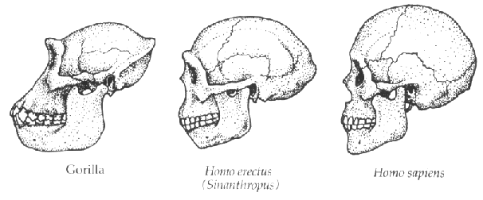
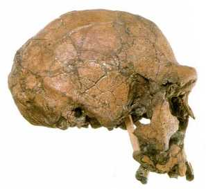
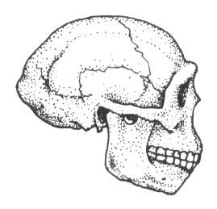
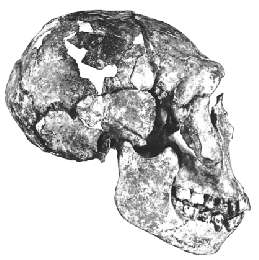

L'homme de Pékin et Homo erectus

Cette illustration est basée sur une photo de Boule et Vallois (1957). La figure du milieu est un modèle de l'homme de Pékin réalisé par Franz Weidenreich, dont Duane Gish dit :
"Le lecteur [de Boule et Vallois, 1957] est invité à vérifier par lui-même que Sinanthropus occupe une position intermédiaire entre les Singes Anthropoïdes et l'Homme. Si l'on accepte sans critique le modèle de Sinanthropus de Weidenreich comme une véritable représentation du Sinanthropus réel, alors il ne pourrait guère rejeter l'évaluation ci-dessus." (Gish, 1985) [soulignement ajouté]En d'autres termes, bien que Gish n'accepte pas la précision de ce modèle, il dit que si il était précis, il serait presque indiscutablement un fossile transitionnel. Comparez maintenant le modèle avec deux autres crânes d'Homo erectus, ER 3733 (à gauche) et WT 15000 (à droite).



Puisque ces crânes d'Homo erectus découverts des décennies plus tard sont très similaires au modèle de Weidenreich, ils devraient, selon l'aveu même de Gish, être acceptés comme intermédiaires entre les singes et les humains.
Arguments créationnistes sur l'homme de Pékin
Arguments créationnistes sur Homo erectus
Cette page fait partie de la FAQ sur les Hominoïdes fossiles de l'Archive TalkOrigins.
Page d'accueil |
Espèces |
Fossiles |
Créationnisme |
Lectures |
Références
Illustrations |
Nouveautés |
Retours |
Recherche |
Liens |
Fictions
http://www.talkorigins.org/faqs/homs/sinanth.html, 04/28/97
Copyright © Jim Foley
|| Emaillez-moi